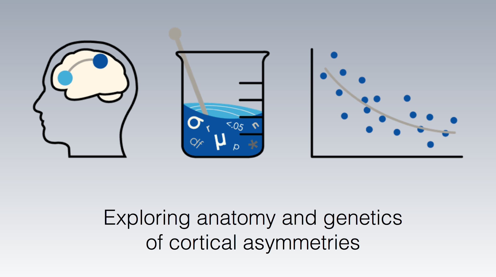
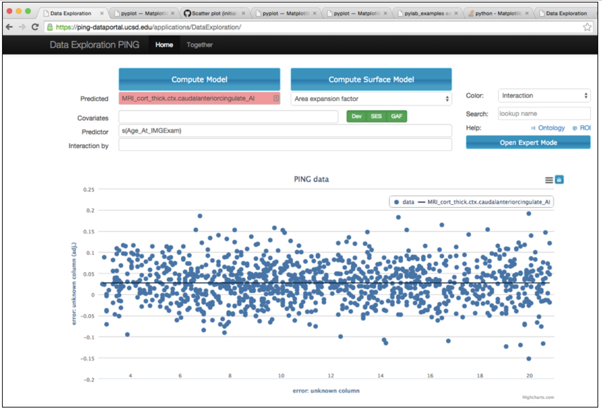
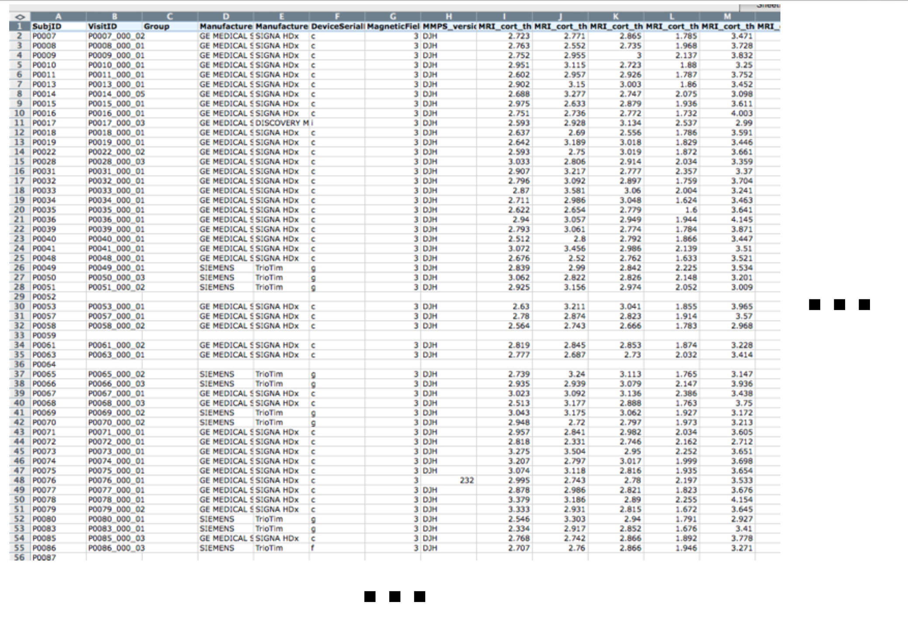
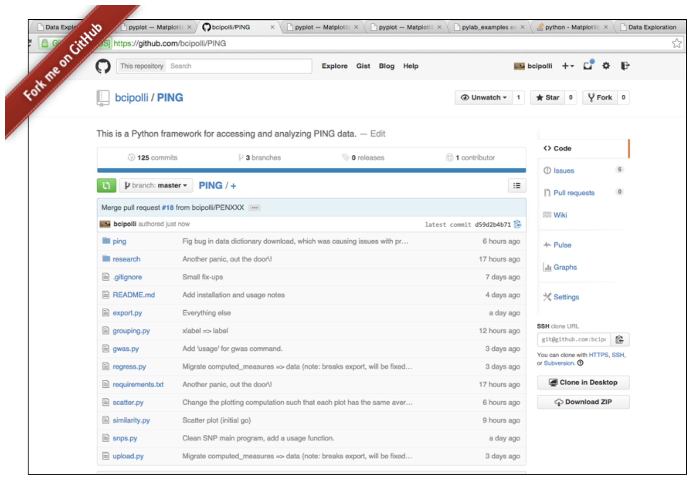

The PING study (Pediatric Imaging, Neuropsychology, and Genetics) is a mult-site cross-sectional study of over 1400 subjects ages 3-20. All MRI data were collected with methods for cross-site standardization.
| PING portal: front-page  | PING portal: data explorers  |
We have access to a data spreadsheet, focusing on developing open-source tools for data download, analysis, and visualization. We focus on cortical surfaces area and thickness (reconstructed for us).
| Data are available as a spreadsheet.  |
We develop open-source tools.


|